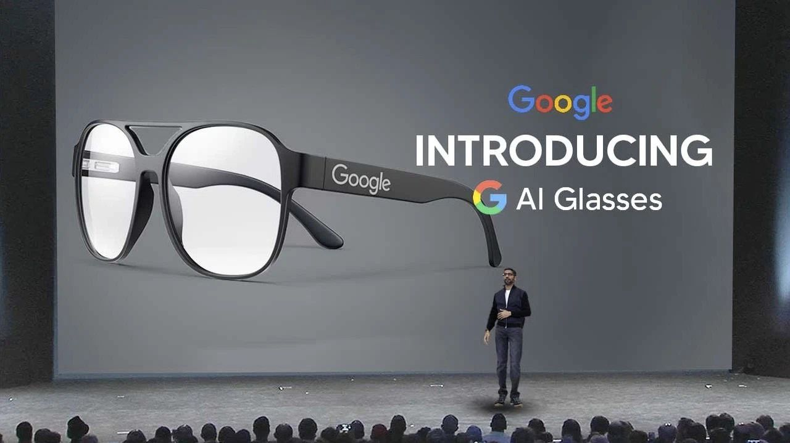

האם 2025 היא השנה שבה משקפיים חכמים סוף סוף יהפכו למיינסטרים? 😎
פורסם במקור ב LinkedIn
האם 2025 היא השנה שבה משקפיים חכמים סוף סוף יהפכו למיינסטרים? 😎
לפי הנתונים שהתפרסמו החודש, מטא וריי-באן כבר מכרו מעל *מיליון* זוגות של משקפיים חכמים.
וזה רק קצה הקרחון.
השנה האחרונה הייתה נקודת מפנה בתחום הזה, עם שורת השקות חדשניות שמשנות את חוקי המשחק.
עם זאת, ההצלחה המסחררת הזו מעלה מחדש שאלות לגבי הפרטיות והנוחות. האם אנחנו מוכנים לעולם שבו מצלמות ומיקרופונים משולבים במשקפיים של כולנו? ואיך זה ישפיע על האינטראקציות היומיומיות שלנו?
📌 Ray-Ban | Meta Smart Glasses
השילוב בין העיצוב האייקוני של ריי-באן לטכנולוגיה של מטא הפך אותם לאחד המוצרים הכי מדוברים של השנה, וכל אחד יכול להזמין אותם מהאתר של ריי-באן ולקבל:
✅ מצלמה 12MP לצילום תמונות ווידאו ושידור חי
✅ מערכת רמקולים ומיקרופונים מתקדמת לשיחות והאזנה למוזיקה
✅ שליטה קולית באמצעות Meta AI – בלי צורך להוציא את הטלפון מהכיס
ויש כבר מעל מליון אנשים בעולם שרכשו את המשקפיים האלה!
📌 Solos AirGo Vision
הנסיון של גוגל גלאס כשל כנראה כי הם הקדימו את זמנם, אז Solos AirGo Vision אולי מכוונים בדיוק בזמן. המשקפיים האלה מגיעים עם GPT-4o מובנה, ומאפשרים תקשורת קולית טבעית והשלמות טקסט חכמות.
✅ מחיר נגיש יחסית (250$)
✅ אפשרות למסגרת עם מצלמה מובנית
עם זאת, יש לציין כי אלו הן הצהרות החברה, וביקורות ראשוניות מציינות שהמוצר עדיין לא בשל לחלוטין. לדוגמה, בסקירה של BGR נטען שהמשקפיים מציעים פונקציונליות מוגבלת, במיוחד בהשוואה למתחרים בשוק.
כלומר התעשיה עדיין בחיתוליה, אבל ניצנים ראשונים של מוצרי מדף מתחילים להופיע ולהיות זמינים לרכישה
📌 הניסיון הישראלי: Spacetop G1
חברת הסטארט-אפ הישראלית Sightful הציגה משקפיים מכיוון אחר - לא משקפי שמש ניידים אלא מחשב נייד ללא מסך, שבו משקפי מציאות רבודה (AR) מחליפים את המסך הפיזי.
✅ משקפי AR המציגים תצוגה וירטואלית בגודל של עד 100 אינץ'
✅ מקלדת ומשטח מגע סטנדרטיים לחוויית שימוש מוכרת
המחשב מאפשר למשתמשים לעבוד בסביבה וירטואלית, עם חלונות צפים באוויר, ומציע חוויית עבודה אינטואיטיבית ומגוונת יותר.
📌ואיך אפשר בלי גוגל, שבשיתוף פעולה עם סמסונג הכריזה לאחרונה על Android XR – מערכת הפעלה ייעודית למכשירי מציאות מורחבת (XR), הכוללת משקפיים חכמים. המערכת מציעה שילוב של בינה מלאכותית מתקדמת, עם דגש על העוזרת הדיגיטלית ג'מיני, המאפשרת אינטראקציה קולית טבעית ושליטה במכשיר באמצעות פקודות קוליות.
המשקפיים המהפכניים האלה כבר מסמנים שינוי משמעותי בתחום, כשהם מציעים חוויות כמו תרגום סימולטני, ניווט, והצגת הודעות ישירות בשדה הראייה, עם אפשרות להרצת אפליקציות קיימות מחנות ה-Play, כולל גרסה מותאמת של דפדפן Chrome. המערכת תומכת גם בפקודות מחווה, המאפשרות שליטה בממשק באמצעות תנועות ידיים.
אם הם יספקו את מה שהם טוענים אז זה כבר Game Changer אמיתי.
אז לאן התחום הזה הולך?
🎯 מצד אחד, השימושיות משתפרת בקצב מהיר – עם יכולות AI, אינטגרציה עם סמארטפונים ושיפור באיכות הסאונד והמצלמה.
🎯 מצד שני, סוגיות פרטיות עדיין מהוות חסם משמעותי – מה יקרה כשהמצלמות הקטנות האלו יהיו בכל מקום?
האם בזכות מהפכת ה-AI המשקפיים החכמים יהפכו סוף סוף לסטנדרט כמו האוזניות האלחוטיות, או שהם עדיין מוצר נישתי?
האם התנסתם כבר במשקפיים חכמים? מעניין לשמוע ביקורות מהשטח👇
